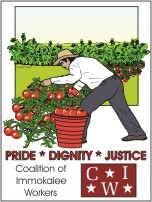

Submitted on Mon, 11/14/2005 - 3:23pm
Disclaimer - The following article is reposted here because it is an issue with some relevance to the IWW. The views of the author do not necessarily agree with those of the IWW and vice versa.
By Harry Kelber ( First in a series of six articles)
 They publish and distribute tons of costly literature that point up the strong advantages of belonging to a union. They provide evidence that union members earn more and have better benefits than non-union workers for doing essentially the same job, and that it applies equally to women and minorities.
They publish and distribute tons of costly literature that point up the strong advantages of belonging to a union. They provide evidence that union members earn more and have better benefits than non-union workers for doing essentially the same job, and that it applies equally to women and minorities.
As a union member, they will no longer be subject to the whims and unilateral decisions of their bosses. They'll have a union with lots of resources and influence to protect them. They'll have a "voice" in improving conditions in the workplace and deciding on the terms of the union's collective bargaining contracts.
That sounds like a pretty good deal for unorganized workers. So why aren't they rushing to union halls in droves to sign up? Are they so happy with their situation on the job that they don't need or want the generous help that unions can provide?
Submitted on Fri, 11/11/2005 - 3:43pm
The Pensacola GMB is currently standing in solidarity with local ATU workers on strike. The company they work for provides bus services to the elderly and disabled. The company was recently bought out, and the new owners are trying to cancel the union contract and get rid of all benefits they have gained by unionizing. These workers have fought long and hard to achieve a union and have won gains such a health care, vacation time, and pay raises. The workers are now on strike trying to preserve these gains. While not wob workers these workers have the same radical spirit and are ready to fight to win.
To help contact the Pensacola GMB at iwwpensacola@yahoo.com
In Solidarity,
FW Briggs
Submitted on Thu, 11/10/2005 - 3:34pm
 Sisters and Brothers:
Sisters and Brothers:
The decision of NYU President John Sexton to withdraw union recognition from graduate employees represents an affront to the dignity of those workers and belies any notion that NYU is some sort of enlightened institution. In response to the University's move, on October 31, the NYU graduate workers union (GSOC/Local 2110 UAW) voted by an overwhelming 85% majority to withhold their labor in defense of the right to free association. I write to you because, as an NYU undergraduate, you are uniquely positioned to make a major contribution to the struggle for social justice by supporting this strike. I'm also writing because without your support this strike will end in defeat.
The strike beginning at your school on November 9 will reverberate far beyond campus. If Sexton's gambit to break the union is allowed to succeed and grad workers are denied a contract, the ability of working people all over the country to build and maintain power at work will be negatively impacted.
Power in a Union
The education system, the media, religious institutions, and the labor movement itself have all failed to properly draw attention to the importance of unions or even accurately portray what a union is. First of all then, I'll share some thoughts on unions to illustrate why I believe the workers' cause at NYU deserves your support.
Submitted on Thu, 11/10/2005 - 3:25pm
http://www.petitiononline.com/bauen/petition.html To: The President of Argentina, Nestor Kirchner

The struggle of Argentinian workers to recover factories and companies abandoned by their owners has become an inspiring model worldwide, and an important symbol that another world is possible. The Bauen Hotel is a concrete example. Its future and significance were recently recognized by the government of Venezuela, with an agreement signed with the Ministry of Tourism and the National Ministry of Popular Economy to work together in the development of a cooperative tourism venture. At the Bauen Hotel there are 120 men and women who every day demonstrate how to build self-managed alternatives that create jobs, dignity and justice where neoliberalism has resulted in devastating failure.
Following a fraudulent bankruptcy and after exhausting all legal paths for a year and a half, they decided to take their futures into their own hands and they built what we can see today: a fully functioning hotel with a restaurant, bookstore and cultural galleries, along with spaces that they lend to social organizations for meetings, conferences and assemblies. If you want to demonstrate your pride in a symbol of the movement right in the centre of Buenos Aires, all you have to do is let the Bauen Hotel continue to operate the way its workers, with efficiency and solidarity, have planned it.
Submitted on Thu, 11/10/2005 - 3:19pm
Disclaimer - The following article is reposted here because it is an issue with some relevance to the IWW. The views of the author do not necessarily agree with those of the IWW and vice versa.
By Elly Leary - Monthly Review, October 2005
On March 8, 2005, the Coalition of Immokalee Workers (CIW) in Immokalee, Florida won a significant victory. In a precedent-setting move, fast-food giant Yum! Brands Inc., the world’s largest restaurant corporation, agreed to all the farm workers’ demands (and more!) if the CIW would end the four-year-old boycott of its subsidiary Taco Bell. (Yum!, a spin off from Pepsi, includes Taco Bell, Kentucky Fried Chicken, A&W, Long John Silver’s, and Pizza Hut franchises.) As United Farm Workers (UFW) president Arturo Rodriguez commented at the victory celebration, “It is the most significant victory since the successful grape boycott led by the UFW in the 1960s in the fields of California.”
El Acuerdo/The Agreement